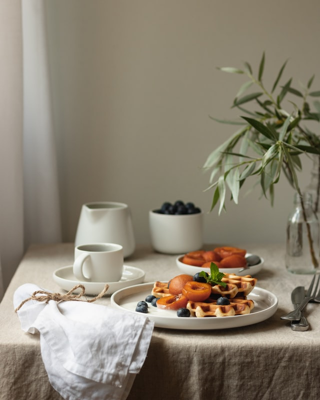
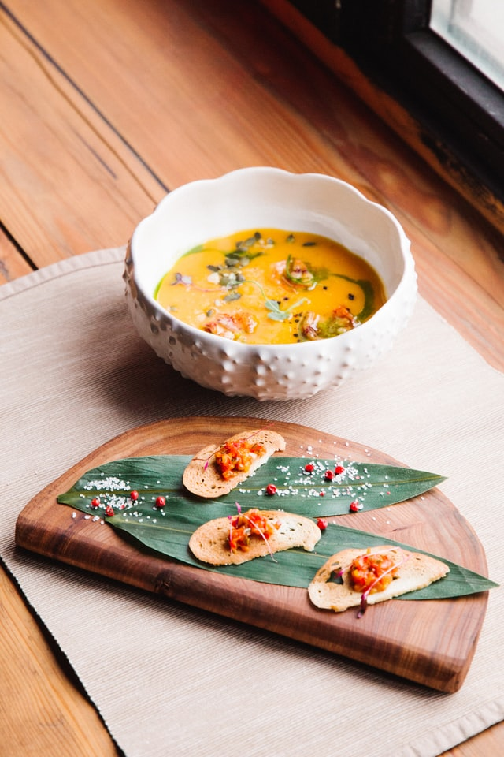
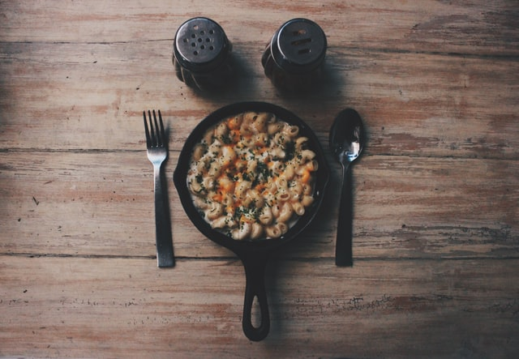

SELECTION OF HEALTHY RECIPES
FOR EVERY SEASON

ARTICHOKES - With cheese
REPARE A BOWL WITH COLD WATER AND
ADD THE SPRIG OF PARSLEY. REMOVE THE
TOUGH OUTER LEAVES FROM THE
ARTICHOKES AND TRIM OFF THE ENDS OF
THE STALKS. PEEL THE STEMS WITH A KNIFE
AND CUT IN HALF. PUT THE ARTICHOKES IN
THE PARSLEY...
DELICIOUS SOUPS FOR AUTUMN
AND WINTER COLD DAYS

CHESTNUT - soup
PREHEAT OVEN TO 190˚C, CUT THE ONIONS
INTO QUARTERS, REMOVING ONLY THE
FIRST LAYER OF SKIN, OR THE ONE THAT IS
NOT ATTACHED TO THE ONION
FLESH. PLACE THE ONION IN A DISH,
SEASON, DRIZZLE WITH OIL AND BAKE UNTIL
GOLDEN...
EASY PASTA FOR FANS OF
ITALIAN CUISINE

FETTUCCINE
- with onion
REMOVE THE OUTER LAYERS
OF THE ONION. CUT INTO FOUR
(OR EIGHT DEPENDING ON
THE SIZE OF THE ONION) AND
PLACE ON AN OVEN TRAY
LINED WITH GREASEPROOF
PAPER; ADD...